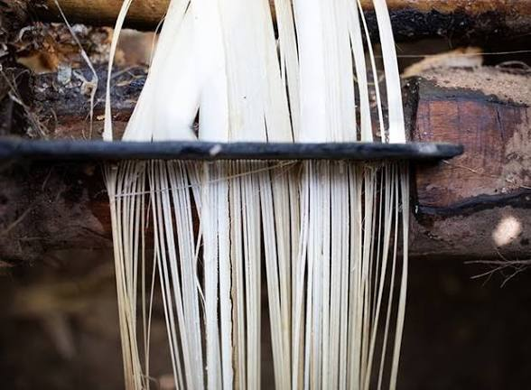
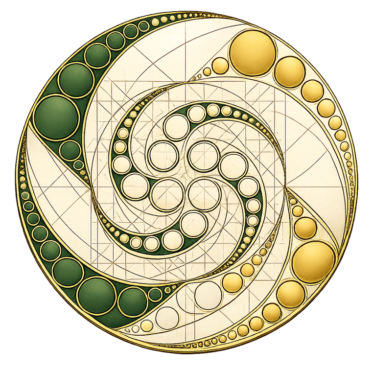
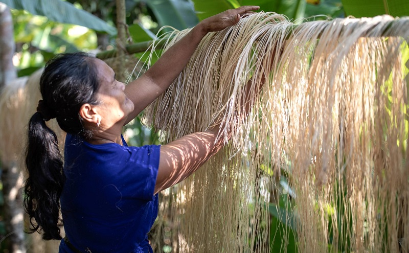

B2B
Segmentos industriais
Fornecimento de insumos e matérias-primas naturais com inteligência ecológica para indústrias têxteis, de construção, embalagens e biomateriais.

A TYPY não compete com quem já produz — conecta. Somos a plataforma que dá escala, visibilidade e acesso a mercado para a matéria-prima natural brasileira.
Ser uma conectora significa organizar uma oferta hoje pulverizada — dezenas de produtores, cooperativas e comunidades espalhados pelo Brasil — e ligá-la a quem procura matéria-prima natural com origem confiável.
Ser uma distribuidora significa consolidar esses portfólios em um único ponto de acesso: um comprador não precisa mais negociar com vinte fornecedores diferentes para substituir plástico por fibra natural — negocia com a TYPY.


A TYPY fica no meio dessa equação, garantindo rastreabilidade, escala e remuneração justa em toda a cadeia.
Uma rede só cresce se remunerar bem quem está na ponta — por isso cada elo da cadeia é rastreado e valorizado.
Da indústria ao consumidor final, o produto muda de forma — a procedência natural não muda.
Fornecimento de insumos e matérias-primas naturais com inteligência ecológica para indústrias têxteis, de construção, embalagens e biomateriais.
Venda direta ao consumidor final de produtos com inteligência ecológica — moda, casa, saúde e biomateriais. Veja no Marketplace.
“Conectar bem é redistribuir valor — para quem planta, para quem transforma e para o planeta.”TYPY — Inteligência Ecológica
Produtor, cooperativa, marca ou investidor — conecte-se à bioeconomia brasileira com a TYPY.